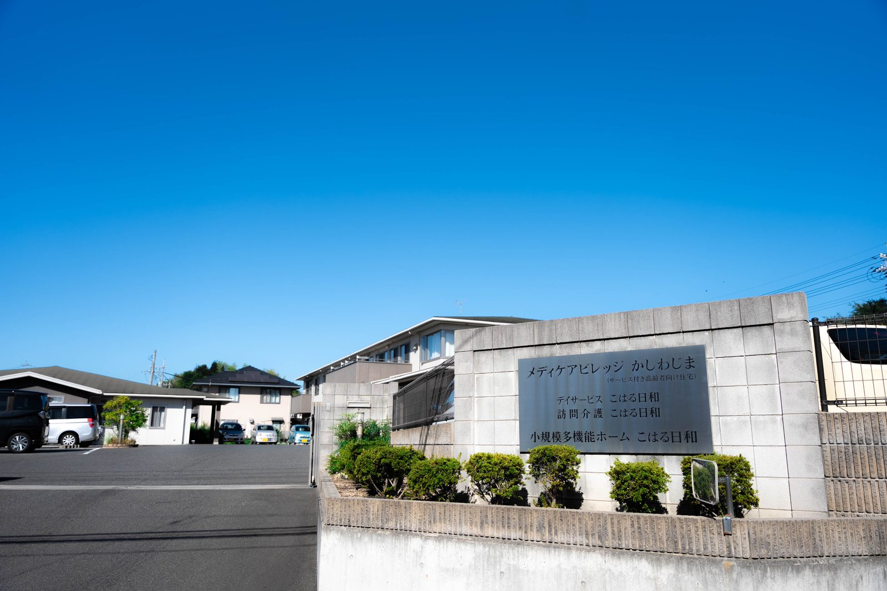

いなだ医院と介護施設は、どういう関係ですか？
A. 回答すべて医療法人いなだ医院がひとつの法人として運営しています。建物は2か所に分かれており、道路を挟んで向かい合っています。医院（外来・訪問診療）とケアマネジャーの事務所が一方に、住まいと通いのサービスがもう一方にあります。ご用件によって電話番号が変わりますので、下の表からお選びください。

ご用件ごとの連絡先
| ご用件 | 事業所 | 電話 |
|---|---|---|
| 外来の受診／訪問診療／訪問看護・訪問リハビリ | いなだ医院 | 086-525-0600 |
| ケアプランの相談／介護のことの相談全般 「どこに聞けばいいかわからない」とき | かしわじま 居宅介護支援センター | 086-525-0600 |
| 住まいの入居／デイサービス／訪問介護 | メディケアビレッジかしわじま こはる日和 | 086-522-8787 |
| 通い・泊まり・訪問を組み合わせて使いたい | 小規模多機能ホーム こはる日和 | 086-522-7811 |
迷われた場合はかしわじま居宅介護支援センター（086-525-0600）にお電話ください。内容をうかがって、担当につなぎます。
建物は2か所です
| 場所 | 入っているもの |
|---|---|
| 玉島柏島 920-106 | いなだ医院（外来・訪問診療・訪問看護・訪問リハビリテーション・居宅療養管理指導） かしわじま居宅介護支援センター（医院の中にあります） |
| 玉島柏島 920-14 | メディケアビレッジかしわじま（サービス付き高齢者向け住宅・28戸） デイサービスセンターこはる日和（同じ建物の中） 訪問介護こはる日和（同じ建物の中） 小規模多機能ホームこはる日和（同じ敷地の中） |
それぞれ何をするところですか
- いなだ医院：診察と治療を行う医療機関です。通院が難しい方のご自宅へは訪問診療でうかがいます。訪問看護・訪問リハビリテーションも医院が行っています。
- かしわじま居宅介護支援センター：ケアマネジャーがいる事務所です。介護保険のケアプランをつくり、事業所との調整を行います。当法人以外の事業所も組み合わせます。
- メディケアビレッジかしわじま：住まいです。賃貸住宅で、安否の確認と生活相談がついています。介護は必要な分だけ別に契約します。
- こはる日和：デイサービス、訪問介護、小規模多機能の名前です。同じ名前ですが、それぞれ別の事業所です。
医療と介護がつながっていると、何が違いますか
- 医師が施設のご利用者にも関わるため、体調の変化を早く把握できます
- 夜間を含めて医師に連絡できる体制があり、医療的なケアが必要な方もお受けしています
- デイサービスの利用日に、そのまま医院を受診していただけます
- 入院・退院のときに、医療と介護の間の引き継ぎがしやすくなります
一方で、当法人のサービスだけを使わなければならないということはありません。他の法人の事業所を組み合わせることもできますし、かかりつけの医療機関が他にある方もご利用いただけます。
ご相談の窓口
初めての方は、まずかしわじま居宅介護支援センター（086-525-0600）へどうぞ。介護保険の認定を受けていない段階でもかまいません。見学のご希望は見学・ご相談の流れをご覧ください。
参考にした情報
本ページは一般的な情報提供を目的としています。掲載している定員・営業日・費用などは、公表されている事業所情報をもとにしたもので、最新の内容と異なる場合があります。ご利用にあたっては必ず重要事項説明書をご確認ください。ご不明な点はお電話（086-525-0600）にてお問い合わせください。
どこにご連絡すればよいか迷われたら、こちらへどうぞ。
最終更新：2026年8月26日